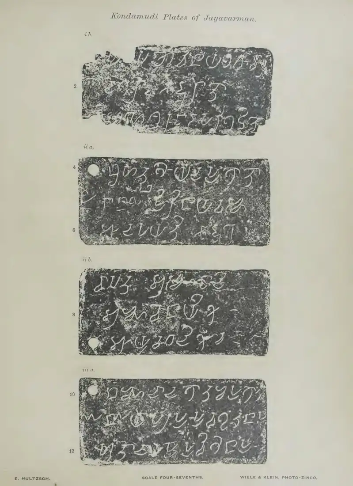
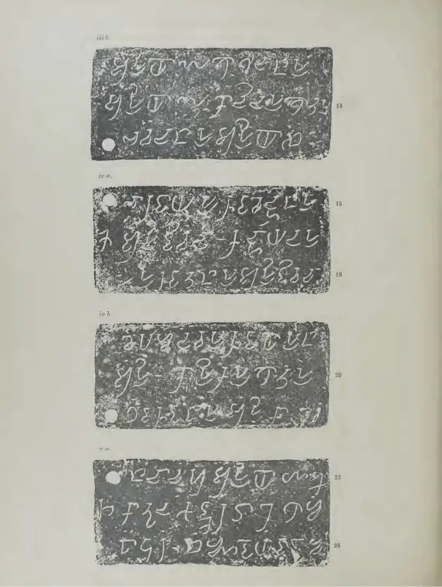
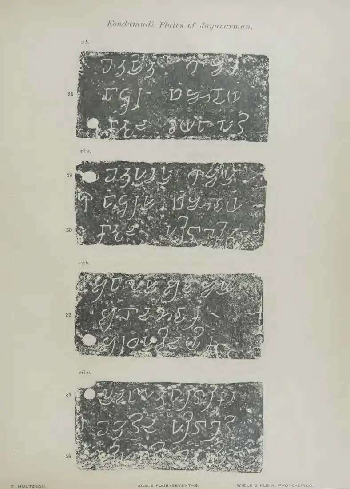
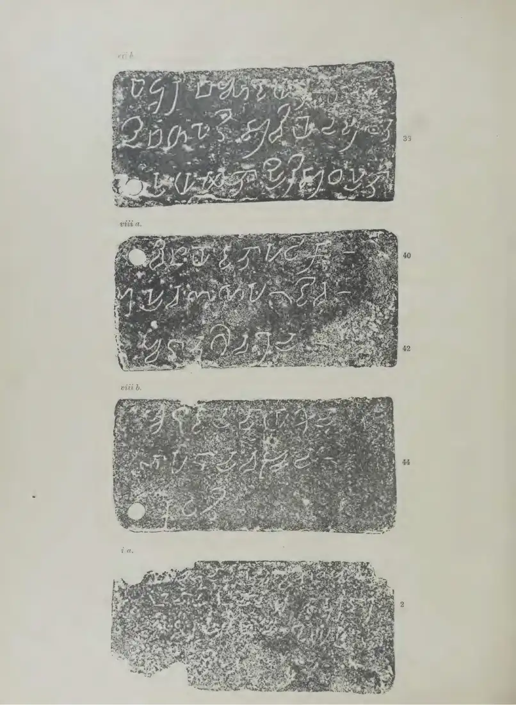

Kondamudi Plates of Jayavarman
KONDAMUDI PLATES OF JAYAVARMAN.
By E. HULTZSCH, PH.D.
The copper plates which bear the subjoined inscription were received in June 1901 from Mr. R. Morris, I.C.S., Collector of the Kistna district, along with an abstract of their contents by Mr. J. Ramayya, B.A., B.L. They had been recently discovered in a mound in the village of Kondamudi in the Tenāli tāluka of the Kistna district and will be deposited in the Madras Museum.
The copper plates are eight in number, and measure about 7" in breadth and about 3 in height. Their edges are not raised into rims. In the upper left corner of the first side of each plate is cut a hole for the ring on which they were strung. The ring measures about 3 in diameter and about in thickness, and its ends are soldered into the base of a circular seal of about 1 diameter. The ring had not yet been cut when the plates came into my hands. In the centre of the seal is, in relief, a trident the handle of which seems to end in an arrow, a bow (?), the crescent of the moon, and an indistinct symbol of roughly triangular shape. Round the margin of the seal runs a Sanskrīt legend in archaic characters which differ totally from those employed on the plates.1 The preservation of the plates is tolerably good; but the first side of the first plate is so much corroded that it can be read only with great difficulty. Besides, two corners of the first plate are broken off, and it has in this way become detached from the ring.
The alphabet of this inscription closely resembles that of the Mayidavōlu plates of Śivaskandavarman (No. 8 above). It shows the same peculiar s, m, j, and e. The group jā (ll. 5, 11 and 34) has a different shape, the vowel-mark being attached on the right, and not at the top of the letter as in the Mayidavōlu plates (ll. 18 and 24). The n (or Ź) is identical in shape with the lingual d, but the dental d is represented by a separate character, while in the Mayidavōlu plates no distinction is made between all the four letters. Initial o occurs twice (ll. 19 and 27), and ph (l. 4), đh (l. 17), gh (l. 19), th (l. 37) and initial t (l. 18) once.
The language is Prākṛit, with the exception of the two Sanskrit words Mahēsvara (l. 3) and Brihatphalāyana (l. 4) and the Telugu village name Pāmṭūra (ll. 24 and 29). As in the Mayidavōlu plates, the orthography follows the practice of the cave inscriptions, where a single consonant does duty for a double letter.2 Double n and double m are expressed by anusvāra and n (ll. 15 and 19) and m (ll. 5 and 44), respectively; a superfluous anusvāra occurs before the groups mh and nh (ll. 7, 8, 10, 16, 17, 24, 26 and 29). The instrumental etehi naṅ (l. 35) is known from the Andhra inscriptions and from the Jaina Prākṛit.3 The curious phrases etasa chasa (l. 28) and etaṅ chasiṅ (l. 36) also have their parallels in the Andhra inscriptions.4 A peculiar word is asi (ll. 13, 14, 15 and 18), aṅsi (ll. 17, 20 and 22) or aṅsikā (l. 21), 'a share,' which seems to be derived from the Sanskrit aṅśa. Divadha (l. 17) represents the Ardhamāgadhī divadṭha, 'one and a half.'5
1 Just as here two different alphabets are employed for Sanskrit and Prākṛit, the inscriptions of the Tamil country use the Vaṭṭeṭuttu and the Tami alphabets for Tami words and the Grantha alphabet for Sanskrit words.
2 The only exception would be aṅsik=dddhā (l. 21), if this reading is correct.
3 A. S. W. I. Vol. IV. p. 104, note 9. Prof. Pischel (Grammatik der Prākṛit-Sprachen, p. 114) derives the particle naṅ or ṇaṅ from the Sanskrit nṅnam.
4 Loc. cit. text line 3; p. 105, text line 5; p. 106, text line 11; and p. 112, text line 3.
5 Prof. Pischel's Grammatik der Prākṛit-Sprachen, p. 320.
The eight copper plates are marked with the numerical symbols '1' to '8' on the left of the second line of each plate. On plates ii. to viii. the figure occupies the first side, but the figure '1' stands on the second side of the first plate. The reason of this is that the writing on the first side of the first plate does not form part of the inscription itself (which begins on the second side of the first plate), but is a kind of docket which was probably added after the remaining 15 pages had been engraved. In ll. 12 to 15, 20, 22 and 41 occur further instances of numerical symbols, among them '10' (l. 41) and '20' (l. 22). A dash resembling the symbol '1' is used as a mark of punctuation at the end of 12 lines, and after 3 words in the middle of lines.
The inscription refers itself to the reign of the king (rájan, l. 5) or, as he is styled on the seal, the Mahárája Jayavarman, who belonged to the gótra of the Brihatphaláyanas and was a worshipper of Mahéšvara (Šiva). From his camp (or capital), the town Kūdūra, he informs his executive officer at Kūdūra that he has granted the village Pāntūra in the district of Kūdūra (Kūdūrahāra, l. 23) to eight Bráhmapas. The royal order was copied on copper plates by a military officer on the 1st day of the 1st fortnight of winter of the 10th year (of the king's reign, l. 41).
Neither Jayavarman nor his gótra are known from other records. The alphabet of his inscription shows that he must have lived in the same period as the Pallava prince Šivaskandavarman who issued the Mayidavôlu plates. Further, the language and phraseology of the inscription are so similar to the Násik inscriptions1 of Gautamíputra Sátakarñi (Nos. 4 and 5)2 and Vásishthiputra Pułumâyi (No. 3) that Jayavarman's date cannot have been very distant from that of those two Andhra kings. The archaic Sanskrit alphabet of the seal of the new plates is corroborative evidence in the same direction.
As suggested by Mr. Ramayya, Kūdūrahāra may be a more ancient form of Gudrahāra, Gudravāra, Gudrâvāra or Gudrâra.3 The same district is probably mentioned in the plates of Vijayanandivarman (l. 3), where I propose to read from the photo-lithograph Kudráhāra instead of Kuḍuhára, the reading of the printed texts.4 Kūdūra, which was the head-quarters of this district and the residence of king Jayavarman, and the village Pāntūra I am unable to identify.
TEXT.5
First Plate; Second Side.
- 1 S . [v] . pato6 vijaya-khaīndhâvârâ
- 2 nagarâ Kūdûrâto
- 3 Mahéšvara-pâda-parigahito
Second Plate; First Side.
- 4 Brihatphaláyana-sagoto
- 5 râjâ siri-Jayavaimmo
- 6 ânapayati Kūdûre
1 A still closer resemblance exists between Jayavarman's plates and the Kârlê inscription No. 19, at the beginning of which the king's name is lost; see below, p. 319, notes 1 and 7.
2 I am quoting the Andhra inscriptions according to Dr. Bhagwanlal Indraji's numbering in the Bombay Gazetteer, Vol. XVI. (Násik), and Inscriptions from the Cave-temples of Western India (Kârlê).
3 See South-Ind. Inscr. Vol. I. p. 47, note 1; above, Vol. IV. p. 34, and Vol. V. p. 123.
4 Ind. Ant. Vol. V. p. 176, and Dr. Burnell's South-Ind. Pal., second ed., p. 135.
5 From the original plates.
6 The two first letters are broken away at the top. The lower portion of the letter v is preserved on a separate piece of the plate, which is broken off and therefore could not be shown on the accompanying photo-zincograph. Of the two possible restorations, sava (sarva) and siva (šiva), the second appears preferable, because documents generally open with a word of auspicious import.
Plate 1 is bound after this page.
Plate 2 is bound after this page.
Second Plate; Second Side.
7 vâpatamî [|*] ammhe dâni
8 ammha-vejayike —
9 âyu-vadhanike cha —
Third Plate; First Side.
10 barimhanânamî Gotama-sagota-
11 jâyâparasa Savagutajasa
12 8 Tânavasa Savigijasa —
Third Plate; Second Side.
13 asiyo 3 Goginajasa
14 asiyo 3 Kođina-sagotasa
15 Bhavamñajasa asiyo be 2
Fourth Plate; First Side.
16 Bhâradâyasa Rudaverinnhujasa —
17 amsi divađhâ — Kañnhâyanasa
18 Îsaradatajasa asi diva[dâ1] —
Fourth Plate; Second Side.
19 Opamainnavasa Rudaghosajasa
20 amsi 1 Kosika-sagotasa
21 Khaindarudajasa amsikâ[ddhâ] cham2
Fifth Plate; First Side.
22 janânamî 8 amsiyo 20 4
23 kâtuna3 Kûdûrahâre gâmamî
24 Pâmîtûramî — bammhadeyamî da[d]âma [|*]
Fifth Plate; Second Side.
25 etainsi tamî gâma —
26 Pâtûra — bammhadeyamî
27 kâtûna oyapâpehi [|*]
Sixth Plate; First Side.
28 etasa chasa gâmasa
29 Pâmîtûrasa bammhadeyamî
30 kâtuna3 parihâre vitarâma [|*]
Sixth Plate; Second Side.
31 apâpesamî anomasamî
32 alonakhâdakamî —
33 arathasamîvinayikamî —
Seventh Plate ; First Side.
34 savajátapârihârikam cha [|*]
35 etehi nam parihârehi
36 pariharâhi [|*] etam chasim gâma[m]
Seventh Plate ; Second Side.
37 Pâțûra[m] ba[m]mhadeya[m] kâ]tuna1 etha
38 nibaindhâpehi [|*] aviyena ânatam[*]
39 sayam chhato [|*] siri-ațha-satâ-
Eighth Plate ; First Side.
40 vijayo dato [|*] pațikâ —
41 samva 10 he pa 1 diva 1
42 Mahâtagi-varena —
Eighth Plate ; Second Side.
43 mahâdainđanâyakena
44 Bhâpahânavaimnena —
45 katati —
First Plate ; First Side.2
1 Bamhanânam Savagutaja-mahâ-
2 janânam janânam 8 Kûdûrahâre
3 Pâmțûrasa bamhadeyasa [||*]
Seal.
Břihatphalâyana-sagôtrasya mahârâja-śrí-Jayavarmmaṇah [||*]
TRANSLATION.
(Line 1.) From the camp of victory, the town Kûdûra,— the fortunate3 king, the glorious Jayavarman, who is favoured by the feet of Mahêsvara (and) who belongs to the gôtra of the Břihatphalâyanas, orders (his) official (vyápřita) at Kûdûra (as follows) :—
(L. 7.) “For conferring on ourselves victory (in war) and for increasing (our) length of life, we have now given the village Pântûra in the district of Kûdûra (Kûdûrahâra) (as) a brahmadêya, assigning 24 shares4 to 8 people, (viz.) to (the following) Brâhmaṇas :— to Savagutaja (Śarvaguptârya), a householder5 of the Gautama gôtra, 8 (shares) ; to Savigija of the Tânavya (gôtra) 3 shares ; to Goginaja 3 shares ; to Bhavannaja of the Kauṇđinya gôtra two —2— shares ; to Rudavennhuja (Rudravishnvârya) of the Bhâradvâja (gôtra) one and a half share ; to Ísaradataja (Ísvaradattârya) of the Kârshnâyana (gôtra) one and a half share ; to Rudaghosaja (Rudraghôshârya) of the Aupamanyava (gôtra) 1 share ; and to Khandarudaja (Skandarudrârya) of the Kauśika gôtra half a share.
1 Read kátúna.
2 This side of the plate is much corroded, and most of the letters are indistinct.
3 With sivapato compare sukhappatto, ‘happy,’ which Childers (s. v. patto) quotes from the Dhammapada.
4 If the shares assigned to each donee are added up, the result is only 20½. Perhaps the remaining 3½ shares were set aside for communal purposes or for the village temple.
5 Jáyâpara is perhaps synonymous with grihastha.
Plate 3 is bound after this page.
Plate 4 is bound after this page.
(L. 25.) “Parcel off1 that village Pâ[n]tûra from this (district), having made (it) a brahmadêya.
(L. 28.) “And to this village Pântûra we grant (all) immunities, having made (it) a brahmadêya.
(L. 31.) “(Let it be) free from being entered, free from being meddled with, free from diggings for salt, arathasamvinayika, and endowed with immunities of all kinds.
(L. 35.) “Exempt2 (it) with (all) these immunities.
(L. 36.) “And having made this village Pâ[n]tûra a brahmadêya, cause a charter to be drawn up3 to this effect.”
(L. 38.) The order was issued by word of mouth.4
(L. 39.) (The charter) was signed5 by (the king) himself. Fortune, wealth, power6 and victory7 were given (by the donees to the king as a reward for the grant).
(L. 40.) (This) set of plates was prepared on the 1st day of the 1st fortnight of winter of the 10th year by the Mahâdaṇḍaniyaka Bhâpahânavarman, the best of the Mahâtagi (family ?).
(First plate, first side.) (Order referring) to the brahmadêya Pântûra in Kûdûrahâra, (granted) to 8 people, to Brâhmaṇas, to the Mahâjanas (headed by) Savagutaja.8
(On the seal.) (The seal) of the Mahûrâja, the glorious Jayavarman, who belongs to the gôtra of the Brihatphalâyanas.
1 The second singular imperative is addressed to the official at Kûdûra. The verb oyapâpeti is probably derived from avayava, the v having been hardened into p as in apâpesa (L. 31). In the Kârlê inscription No. 19 read also oyapâpehi instead of deya papahi (A. S. W. I. Vol. IV. p. 112, text line 3).
2 See note 1 above. I believe that the second singular imperative is also intended in A. S. W. I. Vol. IV. p. 112, text line 4 (parihariha), p. 104, text line 4, and p. 111, text line 14 (pariharîhi); and the second plural imperative ibid. p. 106, text line 11 (pariheretha).
3 The second singular imperative nibaṅdhâpehi, which is quite clear on the copper plate, has been misread in various ways in A. S. W. I. Vol. IV. p. 105, text line 5, p. 111, text line 14, and p. 112, text line 5. The second plural imperative (nibaṅdhâpetha) is meant ibid. p. 106, text line 11.
4 On aviyena see A. S. W. I. Vol. IV. p. 105, note 2.
5 In his valuable paper on the Kârlê inscriptions, which will appear in Vol. VII. of this journal, Dr. Senart derives chhata from kshaṇ, ‘to hurt’ and hence ‘to write.’ The king cannot have written the order himself, because the inscription expressly states that he issued it by word of mouth. Hence I propose to translate chhata by ‘signed.’ The king’s signature may have been affixed to the original document, which was deposited in the royal secretariat, and from which the copper-plates were copied. In the latter the royal signature is represented by the seal on which they are strung.
6 On sattâ see Ind. Ant. Vol. XIV. p. 332.
7 Compare the Kârlê inscription No. 19, where Dr. Senart (see note 5 above) reads vijayathasatâre or satâkhe. If the second alternative is accepted, the compound would mean “victory, wealth, power and fame.”
8 This passage is a kind of docket, stating the contents of the whole document.



